Tweet 保存車両 全国各地で静態・動態保存されている鉄道車両を訪れた際の記録。 青森県 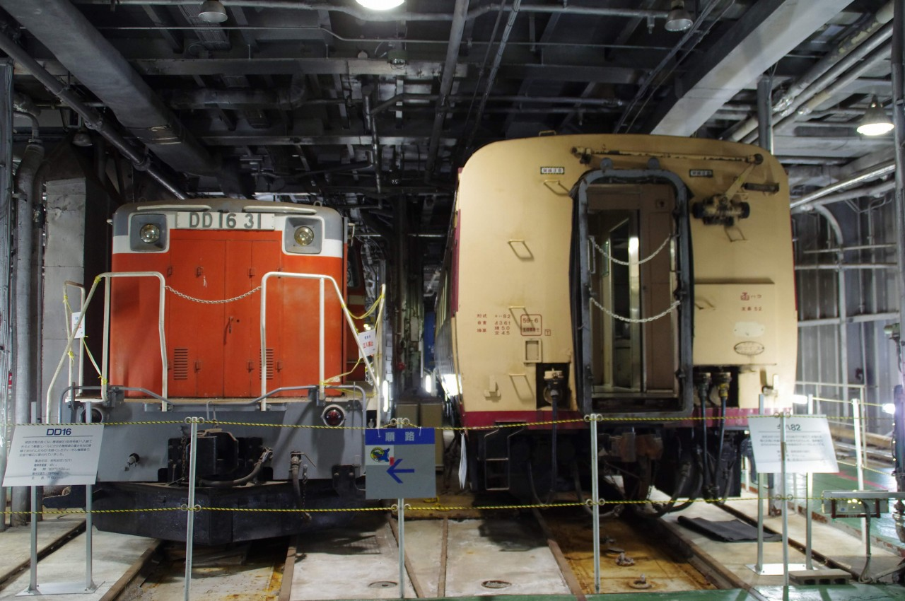 青森市 青函連絡船メモリアルシップ八甲田丸 ヨ14493・ヒ759青森市 埠頭公園 東京都 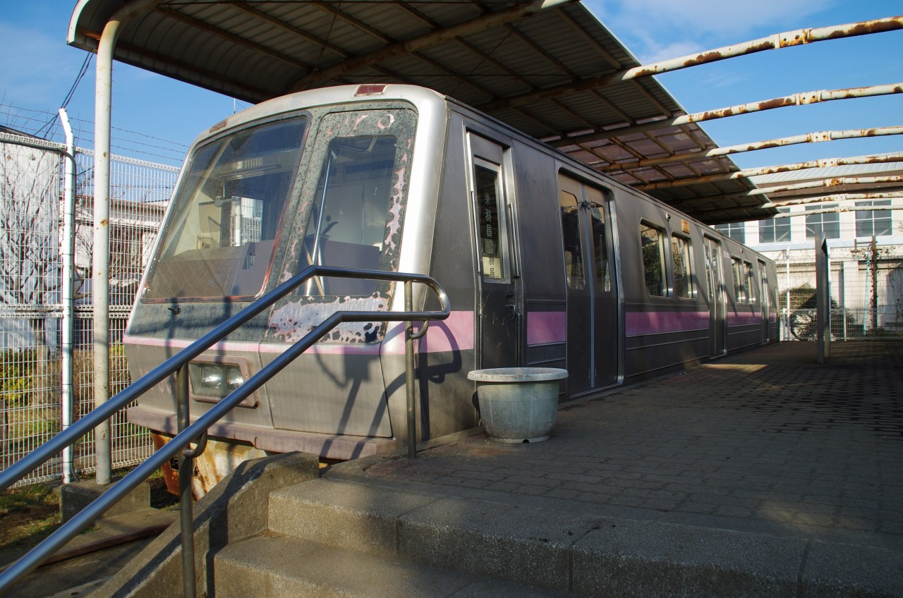 都営12-000形試作車豊島区 千早フラワー公園 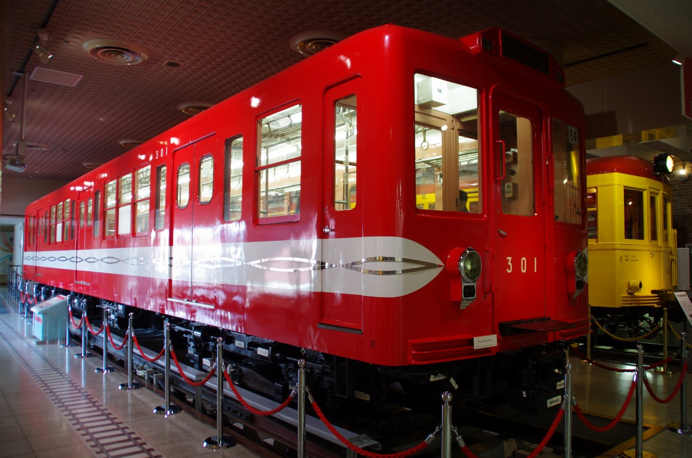 1001号・301号江戸川区 地下鉄博物館 D51 853・都電6080号北区 飛鳥山公園 都電5501号荒川区 都電おもいで広場 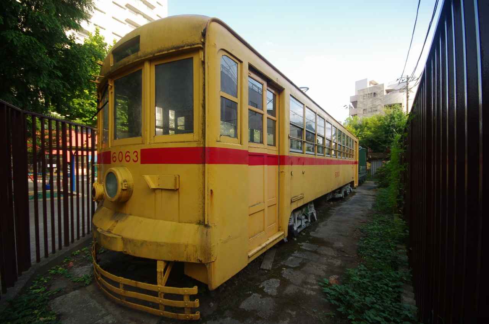 都電6063・乙2号神明都電車庫跡公園 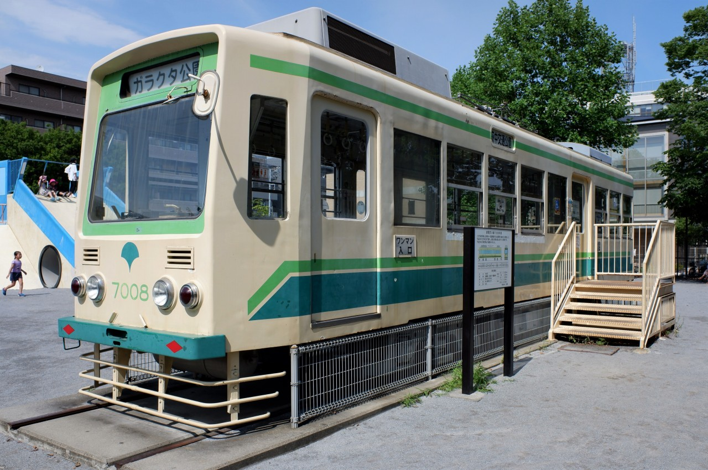 都電7008号萩中公園 都電7506号池之端児童遊園 都電7508号板橋交通公園 神奈川県 横浜市電保存館 川崎市電702号川崎市 桜川公園 千葉県 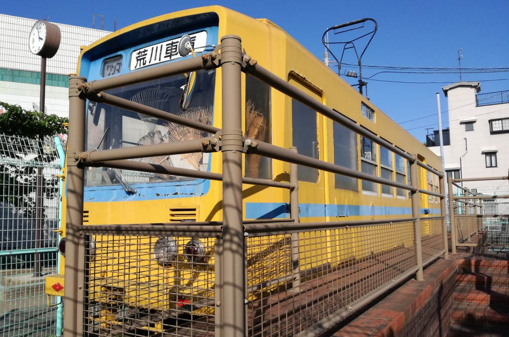 都電7011号市川市 大和田公園 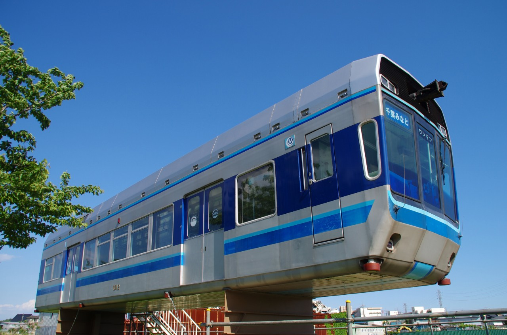 千葉モノレール1012号車松戸市 国分川沿い 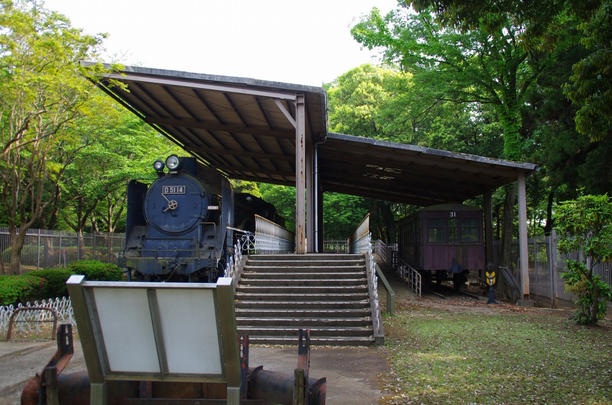 D51 14・流山鉄道キハ31流山市総合運動公園 D51 125船橋市郷土資料館 鉄道連隊K2 134習志野市 津田沼1丁目公園 木曾大滝森林鉄道習志野市 森林公園 いすみ市 ポッポの丘 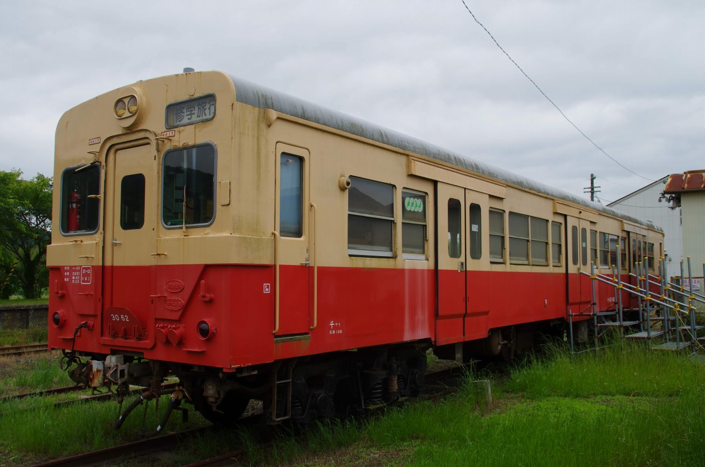 キハ30 62いすみ市 国吉駅 愛知県 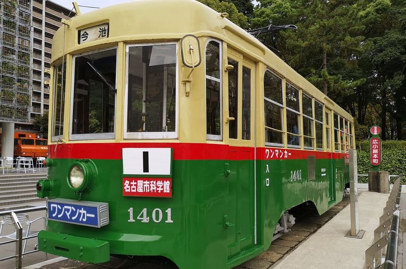 名古屋市電1401号名古屋市科学館 C11 265半田市鉄道資料館 その他都道府県 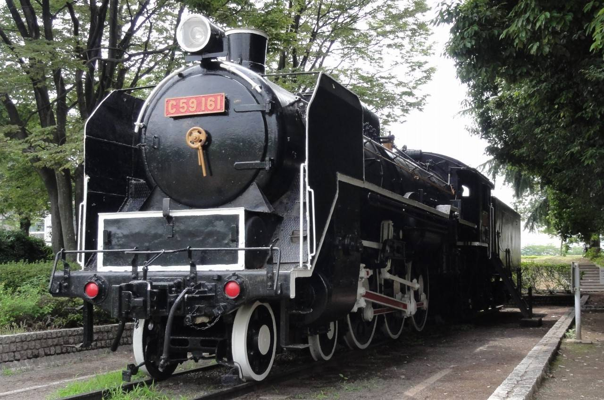 C59 161広島市こども文化科学館 GCT01-201愛媛県西条市 四国鉄道文化館 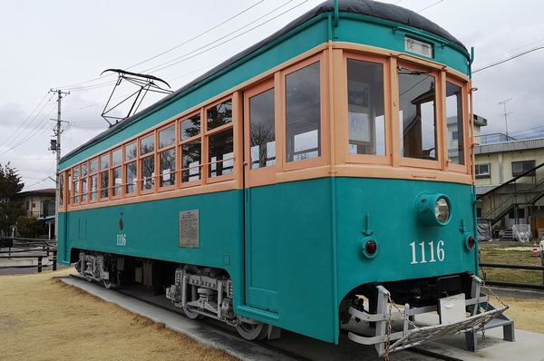 福島交通モハ1116福島県伊達市 保原中央交流館 Tweet